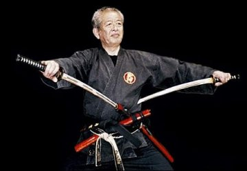
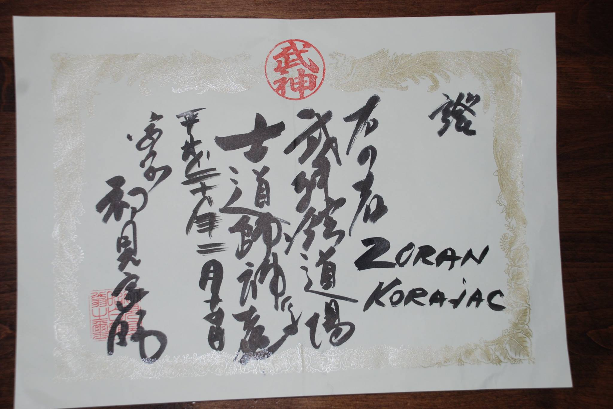
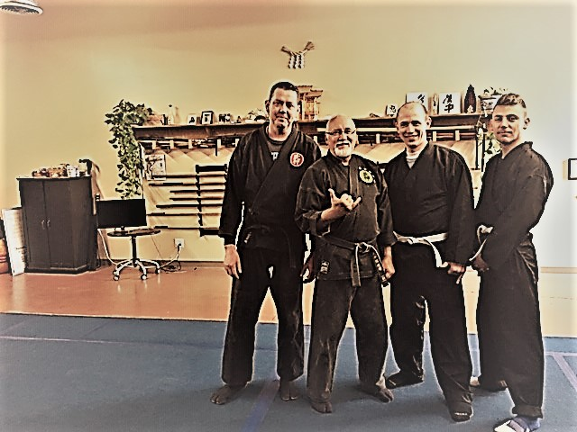

Ninjutsu Warrior arts
Dr. Masaaki Hatsumi, 34th Grandmaster of Togakure Ryu. I believe that Ninpo, the higher order of Ninjutsu, should be offered to the world as a guiding influence for all martial artists. The physical and spiritual survival methods eventually immortalized by Japan’s ninjas were, in fact, one of the sources of Japanese martial arts.

Bujinkan Ninjutsu Instructor License
In 1996, I began training in taekwondo (a traditional Korean martial art) before spending one year in the Croatian army. After returning from the army, my desire to learn martial arts had grown, but I wasn't interested in continuing with taekwondo because for some reason I was unfulfilled with it. I began visiting various martial arts clubs, and would always say that I would return, but did not. I was not attracted to any of those martial arts.
About a year later, I saw an ad for a two-day ninjutsu seminar on the last page of a martial arts magazine. I was very impressed with the techniques demonstrated in the opening demonstration. The words came into my mind, "I want that!" I value the discipline I have learned through my training in the art of ninjutsu, and will continue to learn and practice throughout my life. I am excited to share and teach the principles and techniques that have become so valuable to me.

Training
In Bujinkan Aryu Dojo Utah, trainings are held several times a week or by arrangement. The trainings are based on studying 9 schools of Bujinkan and on applying traditional fighting techniques in today's time. It is the connection of tradition and modern times. Beside the traditional weapons of ancient Japan (katana, tanto, bo, hanbo, jutte, kusari fundo, kyoketsu shoge…), the attention is also given to the weapons that are most commonly found on the streets today (knife, pistol, stick…).